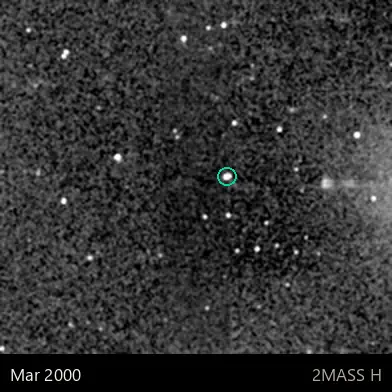

Kahverengi cüce çifti · T1 + T6
Epsilon Indi B
Yakın bir yıldızın çevresinde dolanan iki kahverengi cüce; yılda 4.7 yay saniyesi hareket ediyor. SPHEREx çifti tek bir nokta olarak görür.

İki kahverengi cüce: yıldız gibi parlayamayacak kadar küçük cisimler. 12 ışık yılı uzaktaki bir yıldızın çevresinde dolanıyorlar. O yıldız, Epsilon Indi A, haritada halkanın yanındaki parlak yıldız; halkadaki çift ondan yaklaşık 4.000 kat sönük. SPHEREx çifti güneydoğuya kayan tek bir nokta olarak görüyor. Tayfı, su buharının ışığı soğurduğu 1,4, 1,9 ve 2,7 mikron yakınında ve metanın soğurduğu 3,3 mikron yakınında belirgin biçimde düşüyor.
Neye bakmalı
6.7 yay dakikası batıdaki parlak yıldız Epsilon Indi A’dır: bu çiftin çevresinde dolandığı yıldız. Halkadaki çift ondan yaklaşık 4.000 kat sönüktür. Ziyaretten ziyarete güneydoğuya kayışını izleyin. Sonra tayfa bakın: 1.4, 1.9 ve 2.7 mikron yakınında su buharı, 3.3 mikron yakınında metan ışığı soğurur ve tayf oralarda belirgin biçimde düşer; ikisi de kahverengi cücelerin atmosferindedir.
SPHEREx’in bu noktaya ait 463 pozu var: 24 Nisan 2025 ile 2 Ekim 2026 arasında.
Chronosphere’de aç: Epsilon Indi B
Çeyrek yüzyıl boyunca

Kaynaklar: SPHEREx, NASA/JPL-Caltech, IRSA · SIMBAD · Gaia DR3 · 2MASS · WISE, NEOWISE · Wikipedia